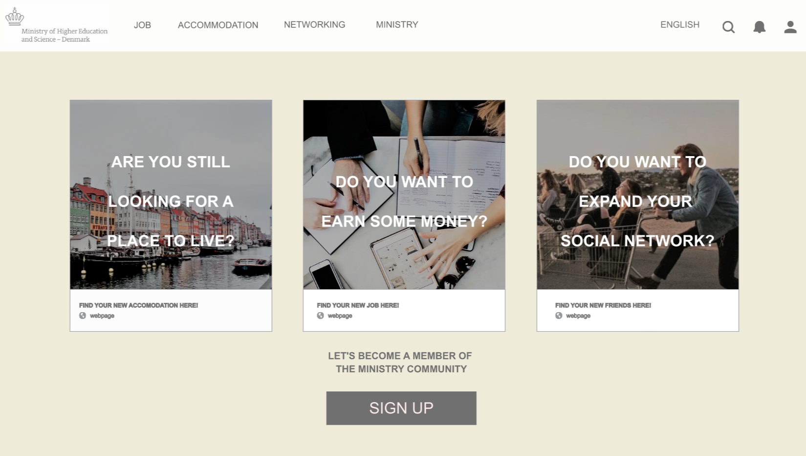
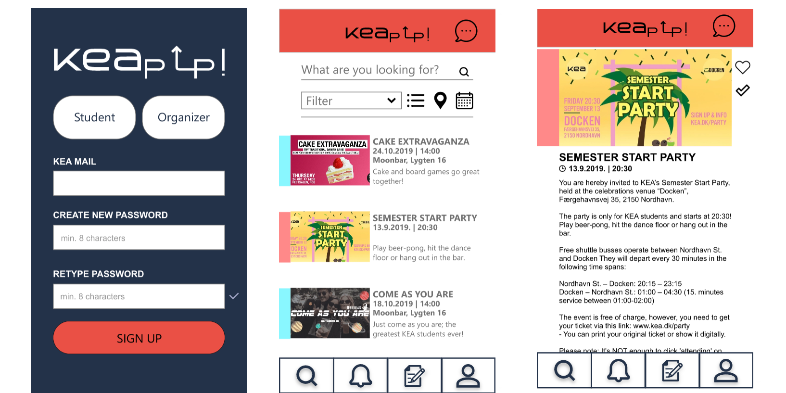

03.01.01 Data collection
Data collection was the introduction to Basic UX. The purpose of it was to get familliar with all types of research - desk research, interview research as well as observation research. They all showed me different ways to gather data on people's bahviour and opinions. It is crucial to take them into consideration when doing anything related to UX design.
03.03.01 Prototype
In this assignment we had to build a XD prototype of a website using a UI kit. Its goal was to help new international students in Copenhagen (target audience) to find an accommodation, a job or a social network - in my group we focused on accommodation.
PROTOTYPE
03.04.01 Design Sprint
This assignment focused on creating a native app concept improving life of KEA students. We had to work in a group and use design sprint method (MAP-SKETCH-DECIDE-PROTYPE-TEST-PITCH) to develop our product. We decided to develop an app called KEAp Up - one place where you can find every event related to KEA and that is accessible to every KEA student.
